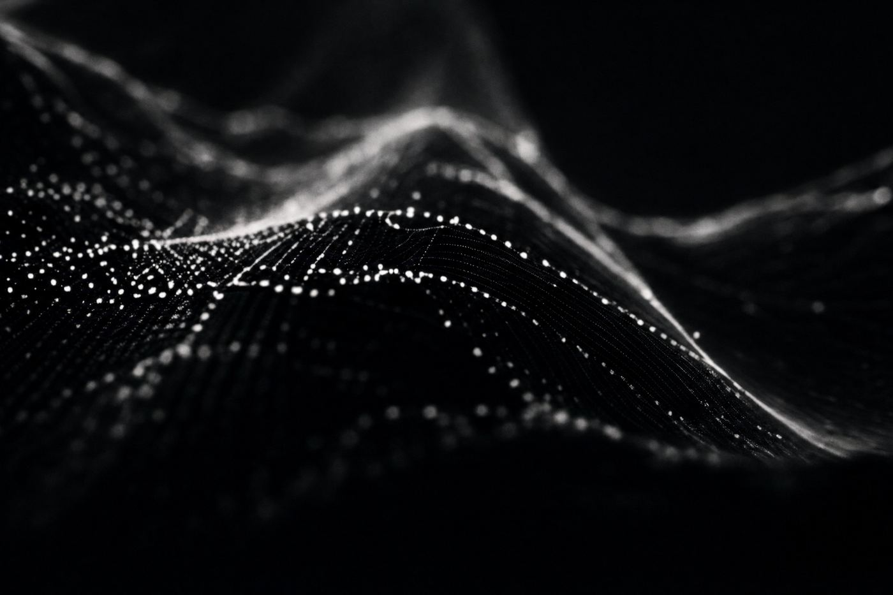

01 / 04
ParallaxAi
AI & AutomationBuilding the intelligent infrastructure behind modern businesses.
ParallaxAi develops AI systems and automation that make businesses faster, more efficient and more scalable, from operational workflows and customer management to data, reporting and intelligent decision-making.